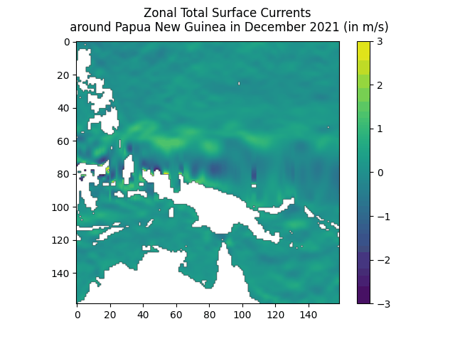
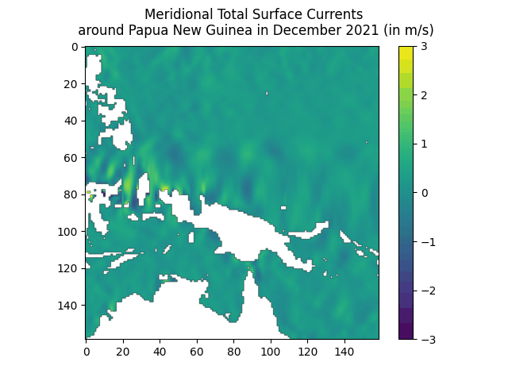
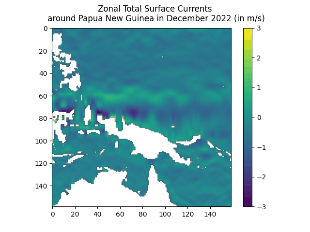
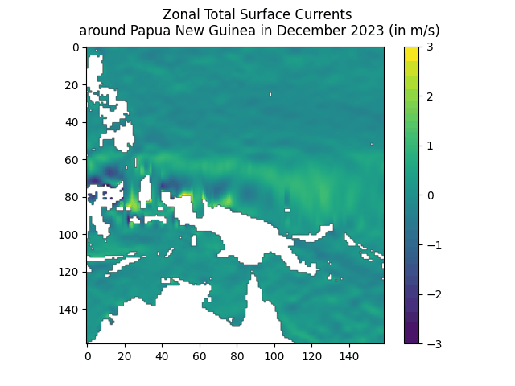
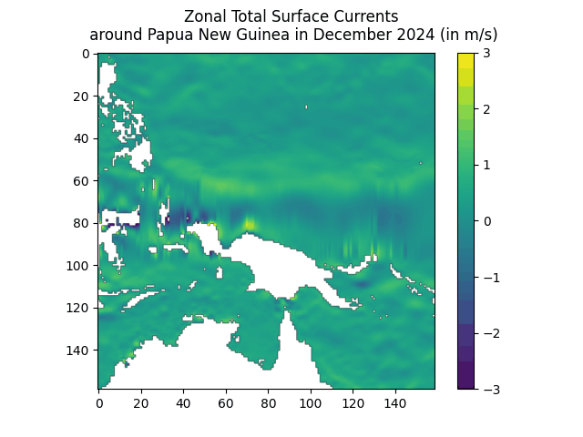
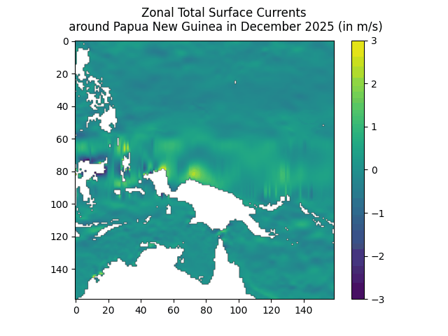

All data taken from PODAAC Ocean Surface Current Analyses Real-time (OSCAR) data. Data can be found here.
Each element in the dataset represents the average zonal (west-east) and meridional (north-south) flow speed throughout a specific day. Here, we've singled out the data for the area around New Guinea specifically.
The below charts were assembled by, given a specific year, representing the speed data for each day in the month of December in map form, and then arranging those charts as frames in an animated gif.
Each of the animated charts below then depicts how the state of zonal or meridional flow changed over the course of the month visually.





